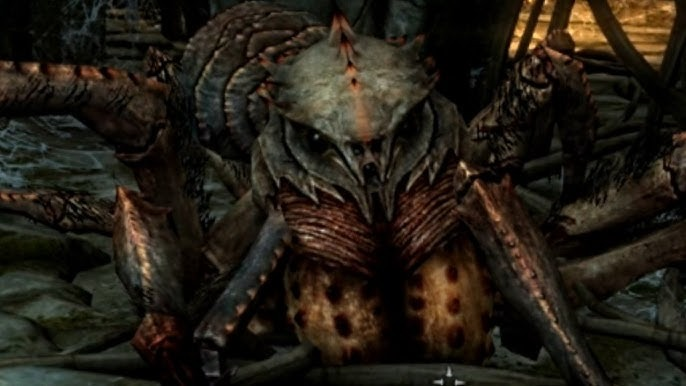

Aracnake

WARNING
This is a dangerous recipe! Follow it carefully to avoid any harm!
Description
What is an cuisine adventure without a sweet treat at the end of it?
That's when the dessert comes around! Arachnophobia might stray you from
this delicacy, but I'll be crooked if the unique taste of refined safe
venom doesn't cure your hunger and your fears!
As long as there's a magic user around, this should be the easiest recipe to
prepare. Let's go!
Ingredients
- a severed spider's cephalothorax
Step by step
- remove all those nasty chitinous appendixes: they are useless!
Too bitter, no decent being would eat that!
- get some water boiling and then put the severed cephalothorax
inside it. Let it boil for 15 minutes. The heat will denaturate all
the harmful proteins and remove all toxins from the creature's
glands.
- To locate the glands, simply break open the exoskeleton with
care, you don't want to smash all the goodies inside, do you?
- The glands will look like a saggy baloon filled with thick water.
The heat made them thus, otherwise it would be a lot wigglier.
Just pulled them from the cooked meat and let them rest on ice
for half an hour.
- There you go! Drink it straight from the ice, it has an unique
wine-like taste, causing effects of improved blood flow, joy and
stilness of mind.
A note on drinking venom:
please follow the instructions above to the letter. Spider's can cause
a miriad of undesirable effects, including death and erectile disfunction.